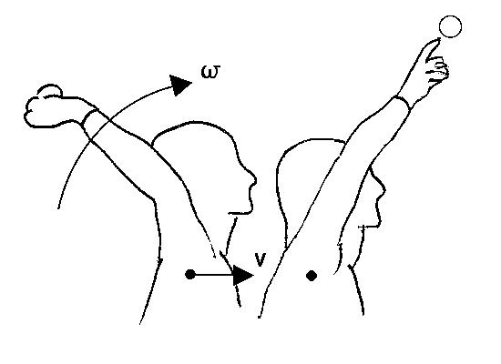
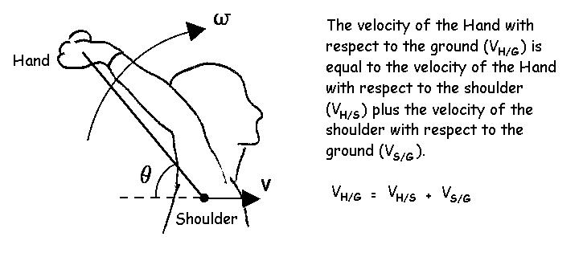
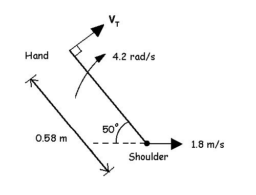
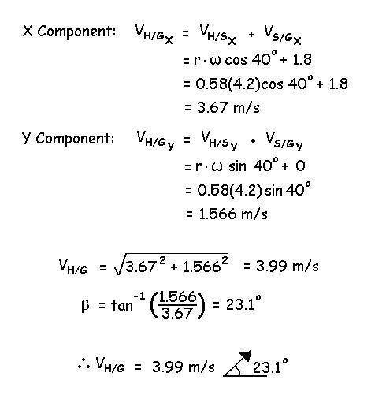

General Kinematics
General motion is a combination of linear and angular motion. This is often very important in human movement. In the example of the baseball pitcher (shown below), his shoulder is translating forward as his arm rotates about the shoulder. The objective of the motion is to deliver the required velocity (magnitude and direction) to the ball before it leaves the pitcher's hand.

This velocity is measured relative to the ground and is the vector sum of the ball's velocity relative to the shoulder and the velocity of the shoulder relative to the ground. The resultant linear velocity is calculated as follows:

Since the hand is rotating about the shoulder, the velocity of the hand relative to the shoulder would be the tangential velocity. Assume that the radial distance of the hand from the shoulder (r) is 0.58m and θ is 50 degrees and ω is 4.2 radians per second. Assume also, that the shoulder has a velocity (V) of 1.8 m/s acting horizontally with respect to the ground. Find the velocity of the hand with respect to the ground.
Solution:

We solve this vector addition by using rectangular components.
